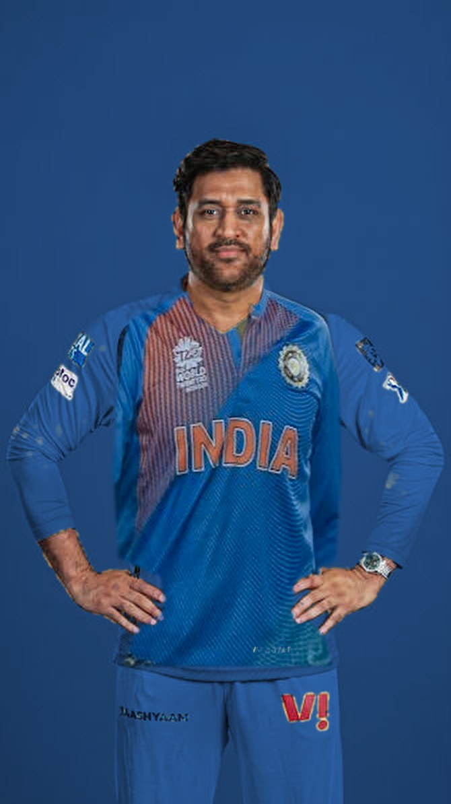
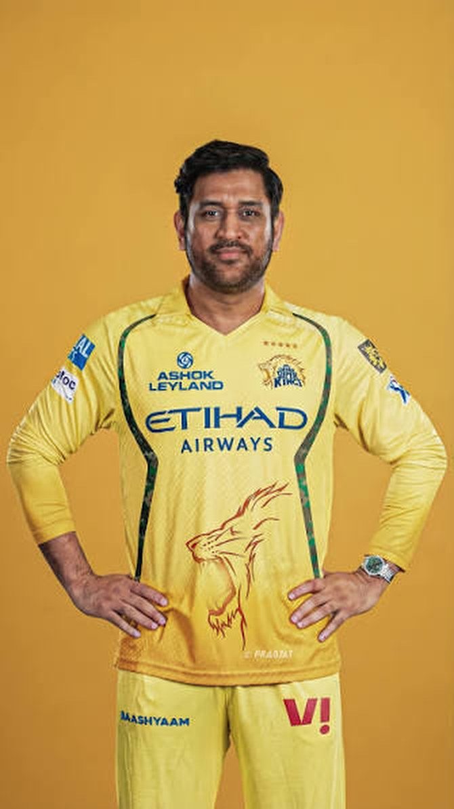

Tests
2005 – 201490matches
- Runs
- 4,876
- Average
- 38.09
- Highest
- 224
- 100s / 50s
- 6 / 33
- Catches
- 256
- Stumpings
- 38
Debut v Sri Lanka, Chennai, Dec 2005. Best: 224 v Australia, Chennai, 2013.
Ranchi, Jharkhand · born 7 July 1981
Captain Cool. Thala. The railway ticket collector from Kharagpur who finished a World Cup final with a six, won every ICC white-ball trophy as captain, and led Chennai to five IPL titles.


01 The story
He started out as a football goalkeeper, worked on the railways while playing first-class cricket, and was 23 before he played for India. Here is how it happened, year by year.
Born on 7 July. At DAV Jawahar Vidya Mandir he kept goal for the football team until his coach moved him behind the stumps for the cricket side.
Plays his first Ranji Trophy match for Bihar in the 1999–2000 season.
Takes a job as a travelling ticket examiner with the railways at Kharagpur (2001–2003) and keeps playing for East Zone and Bihar.
Two hundreds against Pakistan A on the India A tour of Kenya earn him a place in the side. He makes his ODI debut on 23 December at Chattogram against Bangladesh and is run out for a duck.
148 against Pakistan at Visakhapatnam in April, then 183 not out against Sri Lanka at Jaipur in October, his highest ODI score. Test debut follows in December at Chennai.
Named captain for the first World Twenty20 in South Africa. India beat Pakistan by five runs in the Johannesburg final on 24 September. He takes over the ODI side the same year.
Chennai Super Kings buy him for US$1.5 million at the first IPL auction, more than anyone else. He becomes Test captain and wins the ICC ODI Player of the Year award (again in 2009).

In December India reach the top of the ICC Test rankings for the first time.
On 2 April at the Wankhede he promotes himself up the order, makes 91 not out off 79 balls and finishes the final against Sri Lanka with a six off Nuwan Kulasekara. India’s first World Cup in 28 years. In November he is made an honorary Lieutenant Colonel in the Territorial Army.
India win the Champions Trophy at Edgbaston on 23 June. He is now the only captain to have won the T20 World Cup, the ODI World Cup and the Champions Trophy.
Retires from Test cricket on 30 December, midway through the series in Australia, after 90 Tests.
Steps down as ODI and T20I captain on 4 January and carries on as a player under Virat Kohli.
Receives the Padma Bhushan, India’s third-highest civilian award, in April. A month later he leads CSK to the title in their first season back from suspension.

His final international match is the World Cup semi-final against New Zealand at Manchester on 10 July. He makes 50 before Martin Guptill’s direct hit runs him out.
Announces his retirement on Independence Day, 15 August, with a short Instagram post.
CSK win the final against Gujarat Titans in Ahmedabad on the reserve day. Minutes later he walks up to a broadcast camera and autographs it, live on air.
Inducted into the ICC Cricket Hall of Fame in June. Earlier that year, aged 43, he had taken the CSK captaincy back mid-season.
A thumb injury keeps him out of the whole of IPL 2026, the first season ever played without him. On 17 November he ends his IPL playing career and is named Chennai Super Kings mentor from IPL 2027.
02 Matches played
Fifteen years as India’s wicketkeeper across three formats, and eighteen IPL seasons with Chennai and Pune.
90matches
Debut v Sri Lanka, Chennai, Dec 2005. Best: 224 v Australia, Chennai, 2013.
350matches
Highest: 183* v Sri Lanka, Jaipur, 2005. Includes 3 matches for the Asia XI.
98matches
Played India’s first T20I, v South Africa at Johannesburg, Dec 2006.
278matches
Chennai Super Kings 2008–15 and 2018–25; Rising Pune Supergiant 2016–17.
03 Wins & losses
Every result with Dhoni as captain, for India and in the IPL. Win rate is wins out of all matches played.
2007
Beat Pakistan by 5 runs
His first tournament as India captain. Joginder Sharma bowled the final over and Misbah-ul-Haq’s scoop went straight to Sreesanth.
2011
Beat Sri Lanka by 6 wickets
91 not out off 79 balls and player of the final. He came in at No. 5, ahead of Yuvraj Singh, and won it with a six.
2013
Beat England by 5 runs
Rain cut the final to 20 overs a side. India defended 129 and went through the tournament unbeaten.
04 IPL career
He played every IPL season from 2008 to 2025, captained in 235 of his 278 matches, and is the tournament’s most successful wicketkeeper.
Tap or hover a season to see the details.
2010
Beat Mumbai Indians by 22 runs
The first title. CSK went on to win the Champions League T20 that year as well.
2011
Beat Royal Challengers Bangalore by 58 runs
The first side to defend the IPL title, at home in Chepauk.
2018
Beat Sunrisers Hyderabad by 8 wickets
The comeback year after a two-season ban. Shane Watson made 117 not out in the final.
2021
Beat Kolkata Knight Riders by 27 runs
A year after CSK missed the playoffs for the first time, they won it all again.
2023
Beat Gujarat Titans by 5 wickets (DLS)
Won on the reserve day, with Ravindra Jadeja hitting 10 off the last two balls. Dhoni played the season on an injured knee.
05 Highlights
Official clips from the ICC’s YouTube channel, plus the news of his IPL retirement. Tap a clip to play it here.

★ The signature moment
Ahmedabad, the early hours of 30 May 2023. Minutes after Ravindra Jadeja hit the winning boundary in the rain-delayed final, Dhoni walked up to a broadcast camera and signed his autograph right on it, live on air.
It was CSK’s fifth title and his fifth as captain, won while he was carrying a knee injury. The IPL later shared the clip of him signing the camera.
06 Records & honours

No. 7 What comes next
2004 – 2026
Twenty-two years after that run-out on debut, the playing days are over. From IPL 2027 he will be in the Chennai dugout as mentor, working with the side he captained for most of the tournament’s history.
Thank you, Thala.